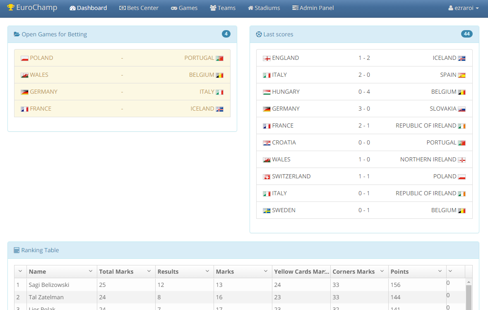
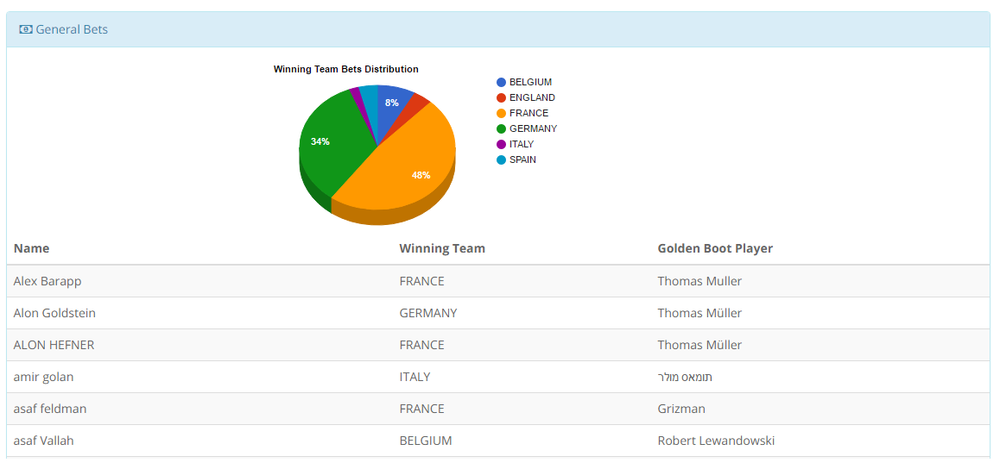
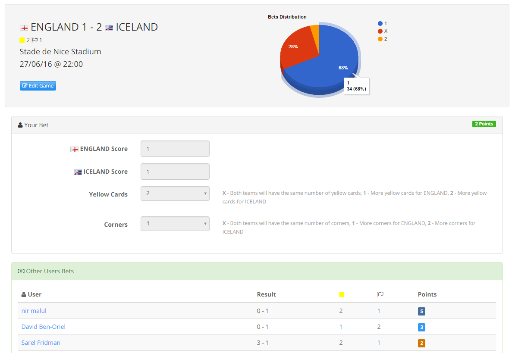
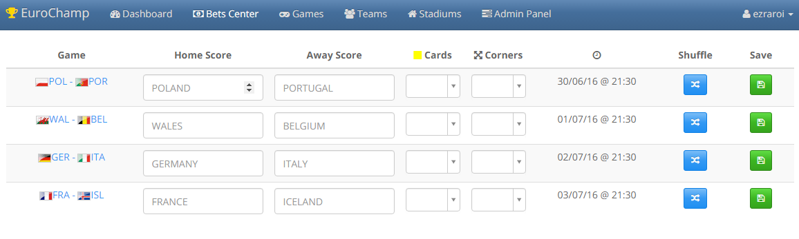
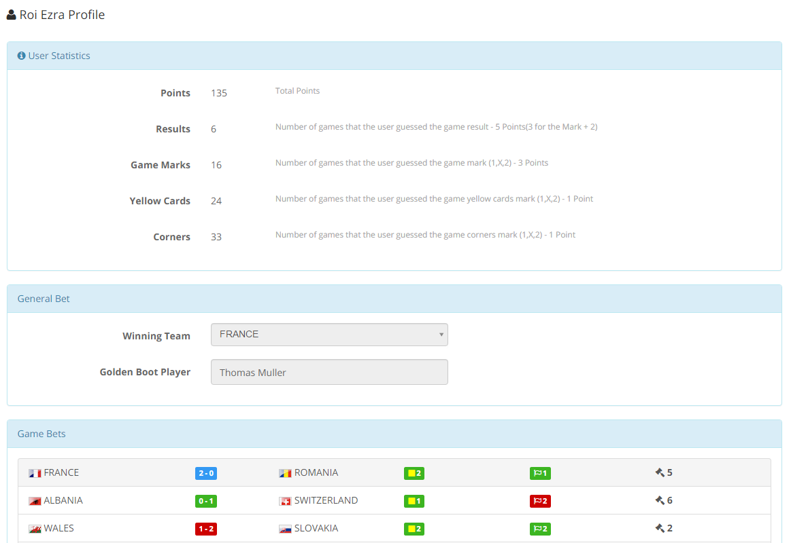

Welcome to Mundialito.
Mundialito is a uniqe open source application that allows you to manage a competition between you and your friends on soccer games.
How to Start
Just fork the repository and deploy it to Microsoft Azure as App Service and connect your forked repository to the application.
Connect the App Service to a database in Azure and That it! You can start playing with your friends
Configuration
You can config the following values in the Web.config file in your repository (Mundialito folder) or in the app settings panel in Azure portal:
- AdminUserName - The user name of admin user that will be created in the database
- AdminFirstName - The first name of the admin user
- AdminLastName - The last name of the admim user
- AdminEmail - The email address of the admin user
- FacebookAppId - The Application ID in facebook if exists (Used for the Facebook Social Plugin) - Optional
- SpotIMSiteID - The Application ID in Spot.IM platform (Used for the Spot.IM plugin) - Optional
- TournamentStartDate - The start date of the tournament. Registration is blocked one day before this date and global bets must be placed before it also
- TournamentEndDate - The end date of the tournament. Global bets can be resolved only after that date
- ApplicationName - The name of the application. Will be displayed in several places in the web site
- TournamentDBCreatorName - Name of class which implements the
ITournamentCreatorinterface for creating the games, teams and stadiums in the application - Optional - Theme - Name of the theme you want for the web site. Can be one of the following:
cerulean,spaceLab- Optional - MonkeyUserName - The name of the monkey user. The monkey user is a user which automaticly submit bets on all games in a random way - Optional
- fromAddress - The address that will be displayed on mails sent by the application
- PrivateKeyProtection - Enabled by default. Set to
falseif you want to remove the Private Key protection and enable any user in the world to register for the website - SendBetMail - Set to
trueif you want the application to send email to the user on each bet he is placing - Optional
Rules
The competition has several rules:- Global Bets - Bets on the winning team and the golden boot player must be placed 1 day before the
TournamentStartDateand equals 12 points each - Game Bets - Bets on games can be submitted until 30 minutes before the game start time. Once the game is closed for betting, other users bets will be displayed.
- Game Scoring - Guessing the mark of the game (1,X,2) - 3 points. Guessing the result - 5 points. Mark of yellow cards and corenrs - 1 point each -> Max of 7 points per game
Administration
TODO
Screenshots





Enabling Mail Sender
TODO